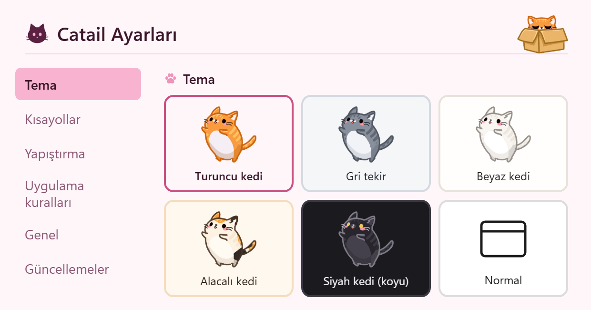

Catail
Windows 10 and 11 · free · MIT- Screenshots, copied text and files in one queue
- One Ctrl+V pastes them all in the order you took them
- Drawing, QR reading, text recognition (OCR), ZIP and PDF
- 16 languages and five cat themes; this site wears your cat too
